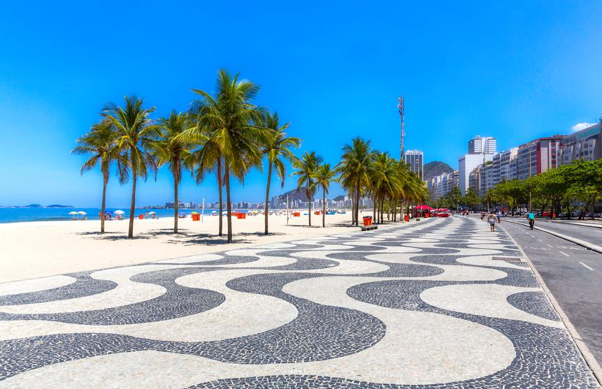
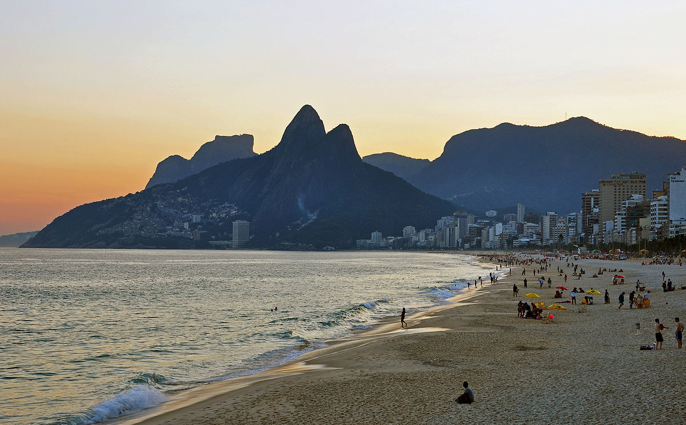
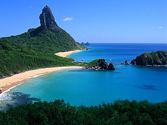
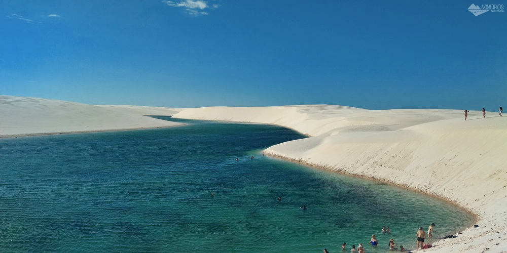
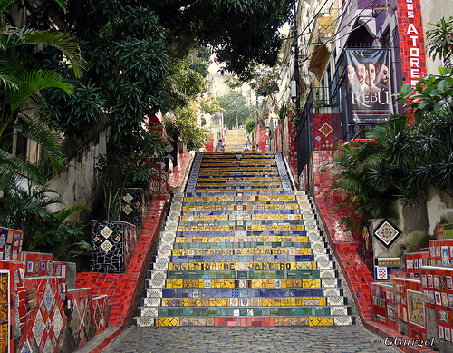
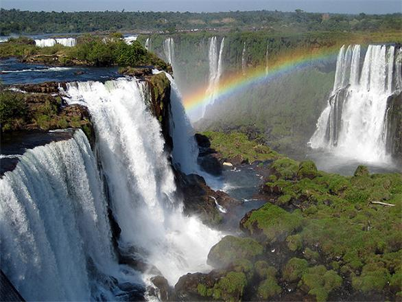
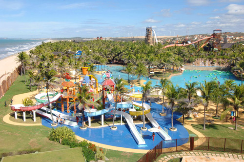
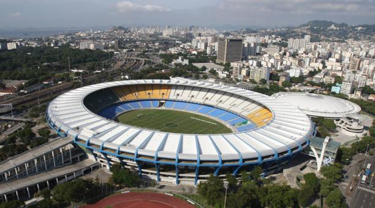
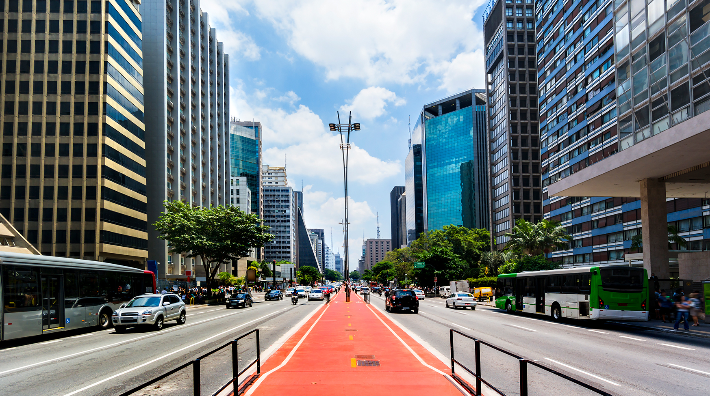

|
 |
 |
Cristo Redentor
El Cristo Redentor es una enorme estatua de cristo con
los brazos abiertos mostrando a la ciudad de Río de Janeiro, Brasil.
La estatua tiene una altura de 30,1 metros más un pedestal de 8 metros.
|
Pão de Açúcar
El Pan de Azúcar es un morro situado en Río de Janeiro, Brasil,
en la boca de la bahía de Guanabara sobre una península que sobresale en el océano Atlántico.
|
Copacabana
Copacabana es célebre por su playa en forma de media luna y es uno de los barrios
más animados de Río, donde tanto vecinos como visitantes disfrutan las 24 horas de su arena
y su paseo marítimo con empedrado en mosaico. Entre los rascacielos con vistas a la playa
está el hotel de estilo art déco Copacabana Palace y el imponente Fuerte de Copacabana,
que alberga un museo militar. Lejos de la costa hay apacibles calles donde se suceden las
terrazas de ambiente distendido y los bares sencillos
|
|  |
 |
 |
Ipanema
Ipanema es un barrio moderno conocido por la emblemática playa del mismo nombre,
un lugar que atrae a todo tipo de visitantes, tanto para tomar el sol como para socializar.
La península rocosa Pedra do Arpoador es un lugar popular para hacer surf que cuenta con senderos
y vistas a la puesta de sol. En el interior, las calles arboladas están jalonadas de boutiques de moda de lujo,
restaurantes de alta cocina y bares informales donde suena bossa nova.
|
Fernando de Noronha
Fernando de Noronha es un archipiélago volcánico a unos 350 kilómetros en la costa nordeste de Brasil.
Toma su nombre de la isla más grande, un parque nacional marino protegido y santuario ecológico con una costa escarpada
y gran diversidad de ecosistemas. Es famoso por sus playas poco explotadas y perfecto para practicar submarinismo
y esnórquel, ya que tortugas marinas, rayas, delfines y tiburones de arrecife nadan en sus aguas cálidas y cristalinas.
|
Parque Nacional dos Lençóis Maranhenses
Parque Nacional de los Lençóis Maranhenses es un sitio de conservación de la naturaleza brasileña.
Área protegida integral ubicada en la región nordeste del estado de Maranhão
|
 |
 |
 |
Santa Teresa
Santa Teresa es un barrio situado en una colina que ofrece un ambiente rústico lleno de encanto.
Las calles, sinuosas y empinadas, están repletas de elegantes mansiones antiguas, muchas de las cuales
albergan hoteles boutique chics, coctelerías peculiares o restaurantes románticos con vistas a la bahía.
En el barrio, se encuentran estudios de artistas, el Museu da Chácara do Céu, donde se expone arte europeo y brasileño,
y el evocador Parque das Ruinas, que incluye una galería de arte en las ruinas de una mansión.
|
Escalera de Selarón
La Escalera de Selarón o Escadaria de Santa Tereza es una escalera ubicada en el barrio Santa Teresa,
junto al convento homónimo, en la ciudad brasileña de Río de Janeiro.
|
Parque Nacional do Iguaçu
El Parque Nacional do Iguaçu, es un parque nacional que funciona como una unidad de conservación
en el extremo oeste del Estado de Paraná en Brasil. Fue abierto al público el 10 de enero de 1939
a través del decreto ley n° 1.035, tiene un área de 1.852,62 km²
|
|  |
 |
 |
Beach Park
Beach Park es un parque acuático y centro turístico brasileño,
situado en la playa de Porto das Dunas en el municipio de Aquiraz,
en la región metropolitana de Fortaleza.
|
Estadio de Maracaná
El Estadio de Maracaná, formalmente Estadio Jornalista Mário Filho,
es un estadio de fútbol de la ciudad de Río de Janeiro, Brasil.
Es el estadio más grande de Brasil y fue el más grande del mundo durante mucho tiempo
|
Avenida Paulista
La Avenida Paulista es uno de los lugares más importantes de la ciudad de São Paulo,
capital del estado del mismo nombre. Se encuentra en el límite entre la zona centro-sur,
central y occidental; y una de las zonas más altas de la ciudad, llamado Cima Paulista.
|